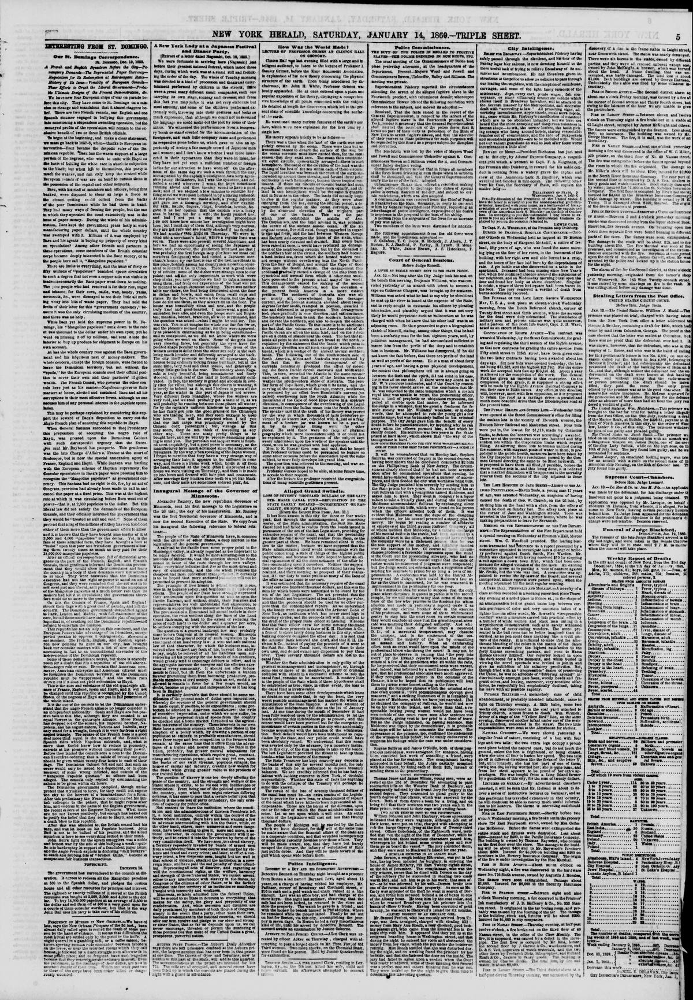

INTERESTING FROM ST. DOMINGO.
https://www.loc.gov/resource/sn83030313/1860-01-14/ed-1/?sp=5

See the original pageVer la página original
Our St. Domingo Correspondence.
ST. DOMINGO, Dec. 13, 1859.
A French and English Squadron Before the City—Peremptory Demands—The Depreciated Paper Currency—Requisition for Its Redemption at Extravagant Rates—History of Its Issue—Venality of European Consuls—Their Efforts to Crush the Liberal Government—Probable Ultimate Designs of the Present Demonstration, &c.
We have now four European ships of war on parade before this city. They have come to St. Domingo on a mission so strange and scandalous that it almost staggers belief. There are two French vessels, one English and one Spanish steamer engaged in bullying this government into sanctioning a stupendous swindling operation, but the moneyed profits of the speculation will remain to the exclusive benefit of two or three British officials.
To begin at the beginning, and make a clear statement, we must go back to 1857-8, when—thanks to European intervention—Baez became the despotic ruler of the Dominican republic. Baez has the warm support of a large portion of the negroes, who wish to unite with Hayti on the basis of holding the white race in absolute subjection to the black; but when left to themselves, this party is much the weaker, and can only keep the control while European vessels of war are on hand to sustain them in the possession of the capital and other seaports.
Baez, with his staff of ministers and officers, being thus backed, were disposed to shear as large a fleece as the closest cutting could collect from the backs of the poor Dominicans while he had them in hand. They had many ways of fleecing the people, but the one in which they operated the most extensively was in the issue of paper money. During the whole of his administration, Baez kept the government press hotly at work manufacturing paper dollars, until the whole country was swamped with it. Millions of it was employed by Baez and his agents in buying up property of every kind on speculation? Among other friends and partners in these operations, some members of the British consular corps became deeply interested in the Baez money, or as the people here call it, “Mangolino papeletes.”
There are limits to everything, and the issue of forty or fifty millions of “papeletes” banished specie circulation to such a degree that not even a copper coin was visible in trade—necessarily the Baez paper went down to nothing. The poor people who had received it for their rice, sugar and tobacco; for their corn, cattle, wax, honey, yams, cocoanuts, &c., were dismayed to see their little all melting away into bits of waste paper. They had sold the fruits of their labor for this “government currency,” because it was the only circulating medium of the country, and there was no help.
While Baez yet held the supreme power in St. Domingo, his “Mangolino papeletes” sunk down to the rate of two thousand to the dollar under his own eyes; yet he went on printing it off by millions, and sent it into the interior to buy up produce for shipment to Europe on his own account.
At last the whole country rose against the Baez government and his iniquitous nest of money-makers. The whole concern, except the foreign consuls, were forced to leave the Dominican territory, but not without the “spoils,” for the European consuls used their official position to cover their own and their partners’ ill-gotten wealth. The French Consul, who governs the other consuls here just as his master—Napoleon—governs their masters at home, abetted and sustained Baez and all his corruptions in their most offensive forms, although no one accuses him of any personal interest in the papelete speculation.
This may be perhaps explained by considering this support the reward of Baez’s disposition to carry out the Anglo-French plan of annexing this republic to Hayti.
When General Santana succeeded to the Presidency this proposition of accepting the negro rule of Hayti, was pressed upon the Dominican Cabinet with such disrespectful urgency that the Executive sent Mr. Raybaud his passports. This gentleman was the late Charge d’Affairs of France at the court of Soulouque, but is now the special annexation agent of France, England and Hayti. While Santana was battling with the European scheme of Haytien supremacy, the Consular speculators in Baez’s paper were pressing him to recognise the “Mangolino papeletes” as government currency. This Santana had no right to do, for, by an act of Congress, provision had already been made to call in and cancel this paper at a fixed price. This was at the highest rate at which it was circulating before Baez went out of power—that is, at 2,000 papeletes to the dollar. But this liberal law did not satisfy the demands of the European Consuls, and they officially informed the government that they would be “treated as null and void.” None of them pretend that a rag of the millions of it they have on hand cost either of them more than the government offers to allow and it is known that they have bought nine-tenths of it at 3,500 and 4,000 “papeletes” to the dollar. Yet, in the face of these admitted facts, they have brought a fleet to “insist” upon this poor and friendless government allowing them twenty times as much as they paid for their 18,000,000 mangolino papeletes.
After an official correspondence full of dictatorial arrogance on the part of the French, English, and Spanish Consuls, these gentlemen informed the Dominican government that they would close their consulates and leave the country in a body if their demands were not acceded to at once. They were answered that the Dominican executive had not the right or power to annul an act of Congress, and they were reminded that the act was in itself most just and liberal, as it provided for the acceptance of the Mangolino papaletes at a much better rate than its makers had left it in circulation; the government therefore could do no more in the premises.
On this the Consuls of France, Spain and England struck their flags with a great deal of parade, and left the country. The Dominican government despatched agents to Paris, London and Madrid, with full statements of the case, but all those courts have united in the plan of suppressing—that is, of crushing out the Dominican republic—and refused to entertain the question.
This republic has not an ally on this continent, and the European Powers take advantage of its friendless, unsupported position to oppress it outrageously. Revenons a nos moutons. The French, English, and Spanish squadron now pointing its guns on our city, has brought back our consular masters with a list of new demands, amounting in fact to an unconditional surrender of the independence of the Dominican republic.
Some of these demands are secret, but there is scarcely room for a doubt that it is a repetition of the old alternative—negro rule or ruin. Be certain that American commerce, American enterprise and American citizens must be forbidden the Dominican territory, or the Dominican republic must be “suppressed,” and the white race driven out if it does not yield submission to Hayti.
This is the sum and substance of the old quadruple alliance of France, England, Spain and Hayti, and it will not be changed until this republic is recognized by the United States, or the negroes of Hayti are put in full possession of the whole island.
It is the cue of the consuls to let the Dominicans understand that the Anglo-French alliance no longer consider it an independent nationality. Spain and Hayti are but passive tails to this kite, although they are counted in as equal Powers in the quadruple alliance. Since Faustin has dropped out of the square, his imperial brother, Napoleon, and his august sisters, Victoria and Isabella, may only stand for a triangle, though it is very far from a right angled triangle. The square of the French base is a good deal more than equal to the square of the British and Spanish sides which Napoleon subtends, and, what is more than Euclid knew how to reduce to geometry, extends at his pleasure without increasing their power. Before they landed the consuls sent a note to the Dominican Executive ordering that a salute of twenty-one guns should be given within twenty-four hours to each of their flags. The Dominican Cabinet felt and said that such an order would only be issued to a dependent, or in chastisement of some wrong inflicted, and outside of the “Mangolino Papelete question” no offence had been alleged. The consuls only replied by commanding the salutes to be given within six hours.
The Dominican government complied, though under protest that it yielded to force, for they could not expose the city to the horrors of a bombardment for a form. After this preliminary the French consul carried his British colleague to the palace, that he might repeat after him, and endorse in the name of the English government, the recent orders of the Emperor Napoleon. What these are no one knows positively, but enough has leaked out to justify the belief that they relate to Hayti, and contain a death blow to this republic.
After this was attended to, the British consul had his turn, and was let loose on his Papelete business. John Bull is not to be balked of his pennies, and the allied squadron is here to see everything settled to their mind.
John Bull’s fight for the opium smugglers was a noble and honest war by the side of this bullying a weak republic into bankruptcy in support of a fraudulent paper issue; and the Anglo-French exploits in doctoring “sick Turkeys” to death and robbing bits of “broken China,” become in comparison fair business transactions.
POSTSCRIPT.
DECEMBER 14.
The government has surrendered to the consuls at discretion. It agrees to redeem all the Mangolino papelites at 500 to the Spanish dollar, and pledges the custom house and all other resources for principal and interest. The eighteen or twenty millions of it stored at the British consulate was bought at 2,500, 3,000 and 4,000 to the dollar. To buy 18,000,000 papelites at an average of 3,500 to the dollar and sell them off at 500 is a very good spec for a couple of these consular worthies; but that is the way John Bull uses his navy to take care of his children.
How to cite this articleCómo citar este artículo
The New York Herald. (1860). New York [N.Y.], January 14, 186014 de enero de 1860. DR in the American PressRD en la Prensa Norteamericana. Library of Congress, Chronicling America: https://www.loc.gov/resource/sn83030313/1860-01-14/ed-1/?sp=5
ReferencesReferencias
Library of Congress, Chronicling America: The New York Herald, January 14, 186014 de enero de 1860.
Send an observationEnviar una observación
Does this article connect with your family, your town, or something you know? Did we get something wrong? Write to us. Observations go to the editor's inbox and are read by a person.¿Este artículo conecta con su familia, su pueblo o algo que usted conoce? ¿Nos equivocamos en algo? Escríbanos. Las observaciones llegan al buzón del editor y las lee una persona.
Send observationEnviar observación